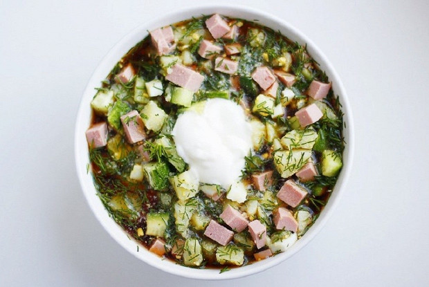

Рецепт домашней окрошки
Отличный рецепт аппетитного блда
Вам понадобится:
Молодой картофель (166г)
Варёная колбаса (84г)
Куриное яйцо (1 штука)
Сметана (по вкусу)
Огурцы (1 штука)
Соль (По вкусу)
Хлебный квас (700 мл)
Укроп (16г)
Рецепт:
- Картофель очистить и отварить до готовности. Остудить.
- Яйца отварить, остудить и почистить.
- Огурцы, яйца, картофель и колбасу нарезать кубиками. Укроп мелко порубить. Смешать все ингредиенты в салатнике.
- Посолить, поперчить. Выложить в тарелки.
- Залить холодным квасом, посыпать зеленью. Подавать охлажденной со сметаной.
Время готовки: 30 мин
Приятного аппетита!